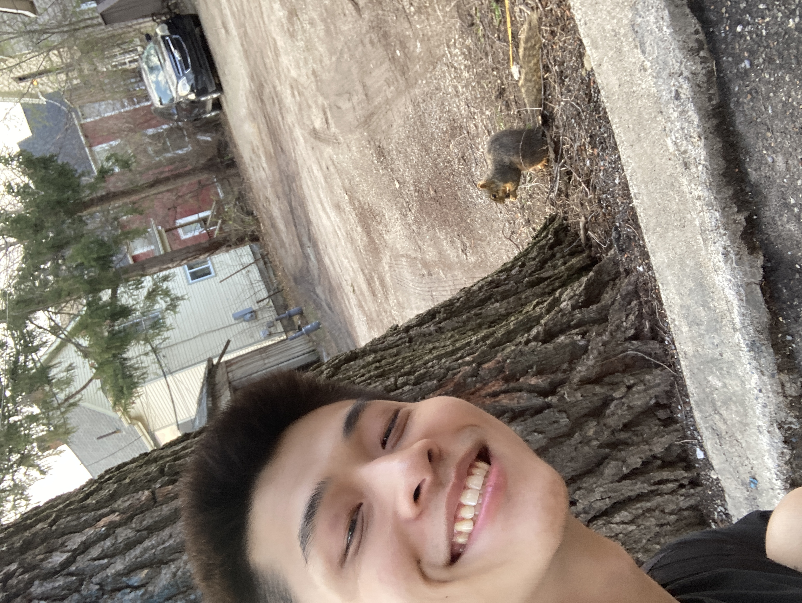
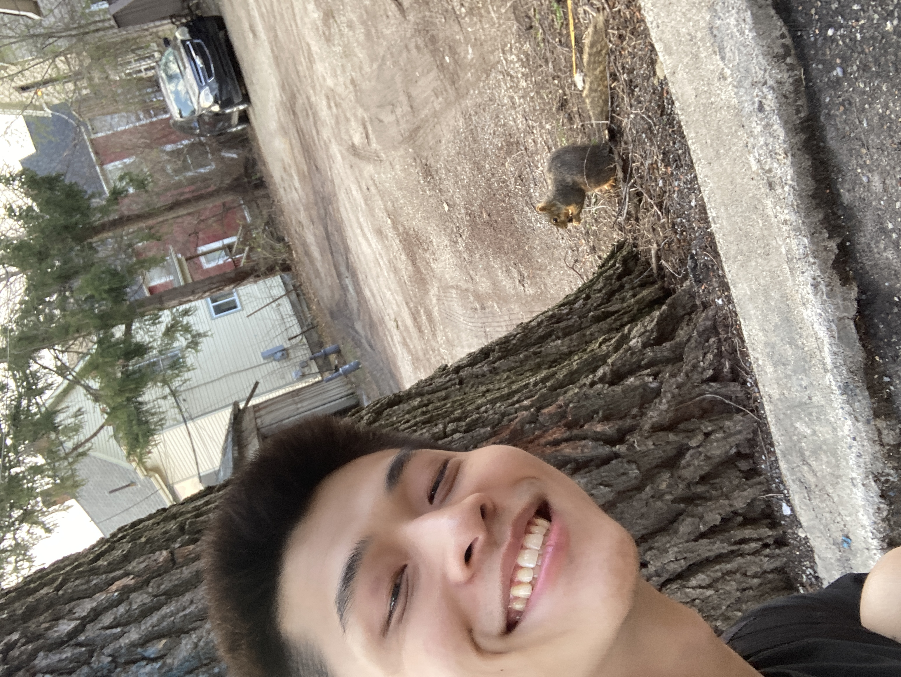

About Me
I am currently studying at the University of Michigan, pursuing a bachelor's degree in Information Analysis with a minor in computer science. I hope to use my background in statistics and ML to analyze data to tell stories and develop software to solve real world problems in sports and healthcare.

 

Why Information?
Starting off as a young first year student, I had no idea of what I wanted to study. All I knew was faint interests in math and code but no major was a passion to me. Finally at the University of Michigan, I found out about the School of Information IA path which focuses on the intersections of big data, coding, and applying them to real-life situations which perfectly alignes with my interests.

Some things I love
- Quotes
- Sports
- Video Games
- Music
- Working Out
- Dogs